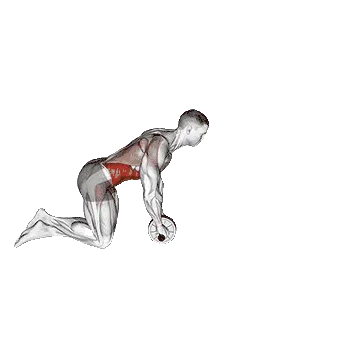

Roue abdominale
Roue abdominale est un exercice de tronc axé sur Grand droit. Consulte les répétitions moyennes et les standards de répétitions sur une seule page.

Répétitions moyennes : Intermédiaire
Repère pour une personne de niveau intermédiaire.
Hommes
21
Femmes
6
Répétitions moyennes de Roue abdominale
| Niveau | ||
|---|---|---|
| Débutant | < 1 | < 1 |
| Novice | 3 | < 1 |
| Intermédiaire | 21 | 6 |
| Avancé | 44 | 14 |
| Élite | 70 | 23 |
Note : ces valeurs sont des estimations des répétitions moyennes réalisables sur une série. Elles peuvent varier selon le poids de corps, l'amplitude, le tempo et d'autres facteurs personnels. Consulte les données détaillées dans le tableau ci-dessous.
Standards de répétitions de Roue abdominale
Hommes par poids de corps (kg) [Répétitions]
| Poids de corps | Débutant | Novice | Intermédiaire | Avancé | Élite |
|---|---|---|---|---|---|
| 50 | < 1 | < 1 | 21 | 48 | 79 |
| 55 | < 1 | 1 | 21 | 47 | 77 |
| 60 | < 1 | 3 | 21 | 46 | 74 |
| 65 | < 1 | 3 | 21 | 45 | 72 |
| 70 | < 1 | 4 | 21 | 44 | 70 |
| 75 | < 1 | 4 | 21 | 43 | 67 |
| 80 | < 1 | 4 | 21 | 42 | 65 |
| 85 | < 1 | 5 | 20 | 40 | 63 |
| 90 | < 1 | 5 | 20 | 39 | 61 |
| 95 | < 1 | 5 | 19 | 38 | 59 |
| 100 | < 1 | 5 | 19 | 37 | 57 |
| 105 | < 1 | 5 | 18 | 36 | 56 |
| 110 | < 1 | 5 | 18 | 35 | 54 |
| 115 | < 1 | 4 | 17 | 34 | 53 |
| 120 | < 1 | 4 | 17 | 33 | 51 |
| 125 | < 1 | 4 | 16 | 32 | 50 |
| 130 | < 1 | 4 | 16 | 31 | 48 |
| 135 | < 1 | 4 | 16 | 31 | 47 |
| 140 | < 1 | 4 | 15 | 30 | 46 |
Hommes par âge [Répétitions]
| Âge | Débutant | Novice | Intermédiaire | Avancé | Élite |
|---|---|---|---|---|---|
| 15 | < 1 | < 1 | 13 | 33 | 55 |
| 20 | < 1 | 2 | 19 | 42 | 67 |
| 25 | < 1 | 3 | 21 | 44 | 70 |
| 30 | < 1 | 3 | 21 | 44 | 70 |
| 35 | < 1 | 3 | 21 | 44 | 70 |
| 40 | < 1 | 3 | 21 | 44 | 70 |
| 45 | < 1 | 1 | 18 | 40 | 65 |
| 50 | < 1 | < 1 | 15 | 36 | 59 |
| 55 | < 1 | < 1 | 12 | 31 | 52 |
| 60 | < 1 | < 1 | 9 | 26 | 45 |
| 65 | < 1 | < 1 | 6 | 20 | 38 |
| 70 | < 1 | < 1 | 2 | 15 | 31 |
| 75 | < 1 | < 1 | < 1 | 10 | 25 |
| 80 | < 1 | < 1 | < 1 | 7 | 19 |
| 85 | < 1 | < 1 | < 1 | 4 | 14 |
| 90 | < 1 | < 1 | < 1 | < 1 | 10 |
Femmes par poids de corps (kg) [Répétitions]
| Poids de corps | Débutant | Novice | Intermédiaire | Avancé | Élite |
|---|---|---|---|---|---|
| 40 | < 1 | < 1 | 6 | 13 | 22 |
| 45 | < 1 | < 1 | 6 | 13 | 21 |
| 50 | < 1 | < 1 | 6 | 13 | 21 |
| 55 | < 1 | < 1 | 6 | 12 | 20 |
| 60 | < 1 | < 1 | 6 | 12 | 19 |
| 65 | < 1 | < 1 | 6 | 11 | 18 |
| 70 | < 1 | < 1 | 6 | 11 | 17 |
| 75 | < 1 | < 1 | 5 | 10 | 17 |
| 80 | < 1 | < 1 | 5 | 10 | 16 |
| 85 | < 1 | < 1 | 5 | 10 | 15 |
| 90 | < 1 | < 1 | 4 | 9 | 14 |
| 95 | < 1 | < 1 | 4 | 9 | 13 |
| 100 | < 1 | < 1 | 4 | 8 | 13 |
| 105 | < 1 | < 1 | 3 | 8 | 12 |
| 110 | < 1 | < 1 | 3 | 7 | 11 |
| 115 | < 1 | < 1 | 2 | 7 | 11 |
| 120 | < 1 | < 1 | 2 | 7 | 10 |
Femmes par âge [Répétitions]
| Âge | Débutant | Novice | Intermédiaire | Avancé | Élite |
|---|---|---|---|---|---|
| 15 | < 1 | < 1 | 1 | 8 | 15 |
| 20 | < 1 | < 1 | 5 | 12 | 21 |
| 25 | < 1 | < 1 | 6 | 14 | 23 |
| 30 | < 1 | < 1 | 6 | 14 | 23 |
| 35 | < 1 | < 1 | 6 | 14 | 23 |
| 40 | < 1 | < 1 | 6 | 14 | 23 |
| 45 | < 1 | < 1 | 4 | 11 | 20 |
| 50 | < 1 | < 1 | 2 | 9 | 17 |
| 55 | < 1 | < 1 | < 1 | 7 | 13 |
| 60 | < 1 | < 1 | < 1 | 4 | 10 |
| 65 | < 1 | < 1 | < 1 | 1 | 7 |
| 70 | < 1 | < 1 | < 1 | < 1 | 3 |
| 75 | < 1 | < 1 | < 1 | < 1 | < 1 |
| 80 | < 1 | < 1 | < 1 | < 1 | < 1 |
| 85 | < 1 | < 1 | < 1 | < 1 | < 1 |
| 90 | < 1 | < 1 | < 1 | < 1 | < 1 |
Note : les valeurs du tableau sont une référence des répétitions possibles sur une série. Utilise les données par poids de corps pour estimer la charge relative et les données par âge pour observer les tendances.
Muscles ciblés
| Groupe | Muscles |
|---|---|
| Muscles principaux | Grand droit |
| Muscles secondaires | Obliques externes |
| Stabilisateurs | Érecteurs du rachis, Deltoïdes, Grand pectoral |
| Prise | Fléchisseurs de l'avant-bras |
Suivi et analyse dans l'app Shiba
Consultez poids, répétitions et progression au même endroit.
Comment lire le tableau
| Niveau | Description | Répartition |
|---|---|---|
| Débutant | Maîtrise la bonne technique et s'entraîne régulièrement depuis au moins 1 mois. | Bas 5% |
| Novice | S'entraîne régulièrement depuis au moins 6 mois. | Top 80% |
| Intermédiaire | S'entraîne régulièrement depuis au moins 2 ans. | Top 50% |
| Avancé | S'entraîne régulièrement depuis plus de 5 ans. | Top 20% |
| Élite | S'entraîne spécifiquement sur cet exercice depuis plus de 5 ans. | Top 5% |
Autres exercices
Corps entier
Soulevé de terre
Corps entier / BIG3
Développé couché
Corps entier / BIG3
Squat
Corps entier / BIG3
Soulevé de terre à la trap bar
Corps entier
Power clean
Corps entier
Soulevé de terre roumain
Corps entier
Soulevé de terre sumo
Corps entier
Épaulé-jeté
Corps entier
Snatch
Corps entier
Clean
Corps entier
Épaulé-développé
Corps entier
Rack pull
Corps entier
Soulevé de terre roumain aux haltères
Corps entier / Haltères
Hang clean
Corps entier
Soulevé de terre jambes tendues
Corps entier
Muscle-ups
Corps entier / Poids du corps
Power snatch
Corps entier
Thruster
Corps entier
Push jerk
Corps entier
Soulevé de terre aux haltères
Corps entier / Haltères
Soulevé de terre déficit
Corps entier
Soulevé de terre roumain une jambe
Corps entier
Burpees
Corps entier / Poids du corps
Hang power clean
Corps entier
Split jerk
Corps entier
Snatch aux haltères
Corps entier / Haltères
Clean high pull
Corps entier
Soulevé de terre prise snatch
Corps entier
Tirage de clean
Corps entier
Soulevé de terre avec pause
Corps entier
Soulevé de terre une jambe
Corps entier
Muscle snatch
Corps entier
Soulevé de terre Jefferson
Corps entier
Tirage de snatch
Corps entier
Wall ball
Corps entier
Soulevé de terre Zercher
Corps entier
Soulevé de terre une jambe aux haltères
Corps entier / Haltères
Épaulé-développé aux haltères
Corps entier / Haltères
Muscle-ups aux anneaux
Corps entier / Poids du corps
Thruster aux haltères
Corps entier / Haltères
Hang snatch
Corps entier
Haut tirage aux haltères
Corps entier / Haltères
Hang clean aux haltères
Corps entier / Haltères
Soulevé de terre derrière le dos
Corps entier
Clap tractions
Corps entier / Poids du corps
Squat thrust
Corps entier
Pectoraux
Développé couché
Pectoraux / BIG3
Développé couché aux haltères
Pectoraux / Haltères
Pompes
Pectoraux / Poids du corps
Développé incliné
Pectoraux
Développé couché incliné aux haltères
Pectoraux / Haltères
Développé couché prise serrée
Pectoraux
Écarté pectoraux à la machine
Pectoraux / Machine
Écarté aux haltères
Pectoraux / Haltères
Écarté décliné aux haltères
Pectoraux / Haltères
Développé couché décliné
Pectoraux
Développé couché à la Smith machine
Pectoraux / Machine
Écarté à la poulie
Pectoraux / Poulie
Chest press
Pectoraux
Développé au sol
Pectoraux
Écarté incliné aux haltères
Pectoraux / Haltères
Au sol développé aux haltères
Pectoraux / Haltères
Développé couché décliné aux haltères
Pectoraux / Haltères
Développé couché avec pause
Pectoraux
Pompes unilatéral
Pectoraux / Poids du corps
Développé couché prise inversée
Pectoraux
Pompes diamant
Pectoraux / Poids du corps
Développé couché prise serrée aux haltères
Pectoraux / Haltères
Développé couché aux pins
Pectoraux
Développé couché prise large
Pectoraux
Pompes décliné
Pectoraux / Poids du corps
Développé incliné prise serrée
Pectoraux
Pompes inclinées
Pectoraux / Poids du corps
Pompes prise serrée
Pectoraux / Poids du corps
Archer pompes
Pectoraux / Poids du corps
Spoto développé
Pectoraux
Dos
Soulevé de terre
Dos / BIG3
Tractions
Dos / Poids du corps
Rowing buste penché
Dos
Tirage vertical
Dos
Tractions supination
Dos / Poids du corps
Rowing aux haltères
Dos / Haltères
Rowing assis à la poulie
Dos / Poulie
Shrug à la barre
Dos / Barre
Rowing T-bar
Dos
Shrug aux haltères
Dos / Haltères
Rowing Pendlay
Dos
Rowing à la machine
Dos / Machine
Pull-over aux haltères
Dos / Haltères
Écarté inversé aux haltères
Dos / Haltères
Rowing haltères avec appui poitrine
Dos / Haltères
Tirage vertical prise serrée
Dos
Écarté inversé à la machine
Dos / Machine
Tirage vertical prise inversée
Dos
Tractions prise neutre
Dos / Poids du corps
Tirage bras tendus
Dos
Écarté inversé à la poulie
Dos / Poulie
Rowing Yates
Dos
Rowing buste penché aux haltères
Dos / Haltères
Extension lombaire
Dos
Rowing sur banc
Dos
Extension lombaire à la machine
Dos / Machine
Pull-over à la barre
Dos / Barre
Tractions unilatéral
Dos / Poids du corps
Banc tirage aux haltères
Dos / Haltères
Rowing inversé
Dos
Renegade row
Dos
Tirage vertical unilatéral
Dos
Rowing assis à la poulie unilatéral
Dos / Poulie
Tirage menton à la poulie
Dos / Poulie
Shrug à la machine
Dos / Machine
Shrug à la trap bar
Dos
Shrug à la Smith machine
Dos / Machine
Élévation en Y incliné aux haltères
Dos / Haltères
Shrug à la poulie
Dos / Poulie
Pull-over barre bras fléchis
Dos / Barre
Power shrug à la barre
Dos / Barre
Rowing Meadows
Dos
Shrug derrière le dos à la barre
Dos / Barre
Hyperextension inversée
Dos
Épaules
Développé épaules
Épaules
Développé épaules aux haltères
Épaules / Haltères
Élévation latérale aux haltères
Épaules / Haltères
Développé militaire
Épaules
Assis développé épaules
Épaules
Assis développé épaules aux haltères
Épaules / Haltères
Développé épaules à la machine
Épaules / Machine
Push press
Épaules
Tirage menton
Épaules
Élévation frontale aux haltères
Épaules / Haltères
Élévation latérale à la poulie
Épaules / Poulie
Développé Arnold
Épaules
Face pull
Épaules
Curl de cou
Épaules
Tirage menton aux haltères
Épaules / Haltères
Élévation latérale à la machine
Épaules / Machine
Développé nuque
Épaules
Pompes en équilibre
Épaules / Poids du corps
Élévation frontale à la barre
Épaules / Barre
Log press
Épaules
Développé à la landmine
Épaules
Extension de cou
Épaules
Z press
Épaules
Viking développé
Épaules
Shoulder pin press
Épaules
Z développé aux haltères
Épaules / Haltères
Développé unilatéral à la landmine
Épaules
Rotation externe aux haltères
Épaules / Haltères
Pompes pike
Épaules / Poids du corps
Push press aux haltères
Épaules / Haltères
Face pull aux haltères
Épaules / Haltères
Rotation externe à la poulie
Épaules / Poulie
Bras
Curl aux haltères
Bras / Haltères
Curl à la barre
Bras / Barre
Curl marteau
Bras
Curl barre EZ
Bras
Curl pupitre
Bras
Biceps curl à la poulie
Bras / Poulie
Curl concentration aux haltères
Bras / Haltères
Curl incliné aux haltères
Bras / Haltères
Biceps curl à la machine
Bras / Machine
Curl strict
Bras
Biceps curl unilatéral à la poulie
Bras / Poulie
Pupitre curl unilatéral aux haltères
Bras / Haltères
Curl marteau incliné
Bras
Spider curl
Bras
Curl Zottman
Bras
Assis curl aux haltères
Bras / Haltères
Cheat curl
Bras
Curl marteau à la poulie
Bras / Poulie
Overhead curl à la poulie
Bras / Poulie
Curl incliné à la poulie
Bras / Poulie
Couché curl à la poulie
Bras / Poulie
Dips
Bras / Poids du corps
Pushdown triceps
Bras
Skull crusher
Bras
Triceps rope pushdown
Bras
Pushdown triceps unilatéral
Bras
Triceps extension aux haltères
Bras / Haltères
Extension triceps
Bras / Barre
Couché triceps extension aux haltères
Bras / Haltères
Dips assis à la machine
Bras / Machine
Kickback aux haltères
Bras / Haltères
Overhead extension à la poulie
Bras / Poulie
Triceps extension à la machine
Bras / Machine
Assis french développé aux haltères
Bras / Haltères
Pushdown prise inversée
Bras
JM press
Bras
Tate développé
Bras
Dips aux anneaux
Bras / Poids du corps
Dips sur banc
Bras / Poids du corps
Curl poignets
Bras
Inversé curl à la barre
Bras / Barre
Curl poignets inversé
Bras
Curl poignets aux haltères
Bras / Haltères
Curl poignets inversé aux haltères
Bras / Haltères
Inversé curl aux haltères
Bras / Haltères
Jambes
Squat
Jambes / BIG3
Presse à cuisses
Jambes
Front squat
Jambes
Hip thrust
Jambes
Leg extension
Jambes
Presse à cuisses horizontale
Jambes
Hack squat
Jambes
Assis leg curl
Jambes
Squat bulgare aux haltères
Jambes / Haltères
Goblet squat
Jambes
Couché leg curl
Jambes
Élévation mollets à la machine
Jambes / Machine
Lunge aux haltères
Jambes / Haltères
Box squat
Jambes
Squat au poids du corps
Jambes
Presse à cuisses verticale
Jambes
Squat bulgare
Jambes
Assis élévation mollets
Jambes
Squat à la Smith machine
Jambes / Machine
Abduction de hanche
Jambes
Good morning
Jambes
Squat Zercher
Jambes
Lunge à la barre
Jambes / Barre
Adduction de hanche
Jambes
Overhead squat
Jambes
Élévation mollets à la barre
Jambes / Barre
Squat aux haltères
Jambes / Haltères
Split squat
Jambes
Élévation mollets aux haltères
Jambes / Haltères
Pull through à la poulie
Jambes / Poulie
Debout leg curl
Jambes
Squat à la landmine
Jambes
Inversé lunge à la barre
Jambes / Barre
Pont fessier à la barre
Jambes / Barre
Développé une jambe
Jambes
Presse développé élévation mollets
Jambes
Squat une jambe
Jambes
Belt squat
Jambes
Squat à la safety bar
Jambes
Pistol squat
Jambes
Squat avec pause
Jambes
Hack squat à la barre
Jambes / Barre
Squat sumo
Jambes
Kickback à la poulie
Jambes / Poulie
Mollets au poids du corps
Jambes
Fente
Jambes
Pont fessier
Jambes
Pin squat
Jambes
Fentes marchées
Jambes
Front squat aux haltères
Jambes / Haltères
Split squat aux haltères
Jambes / Haltères
Inversé lunge
Jambes
Squat jump
Jambes
Nordic curl
Jambes
Sissy squat
Jambes
Half squat
Jambes
Glute ham raise
Jambes
Leg extension à la poulie
Jambes / Poulie
Assis élévation mollets une jambe
Jambes
Fente latérale
Jambes
Kickback fessier
Jambes
Mollets donkey
Jambes
Marché élévation mollets aux haltères
Jambes / Haltères
Relevé latéral de jambe
Jambes / Poids du corps
Squat Jefferson
Jambes
Au sol abduction de hanche
Jambes
Extension de hanche
Jambes
Au sol extension de hanche
Jambes
Tronc
Sit-ups
Tronc / Poids du corps
Crunch à la poulie
Tronc / Poulie
Assis crunch à la machine
Tronc / Machine
Crunch
Tronc / Poids du corps
Flexion latérale aux haltères
Tronc / Haltères
Woodchopper à la poulie
Tronc / Poulie
Relevé de jambes suspendu
Tronc / Poids du corps
Russian twist
Tronc / Poids du corps
Couché relevé de jambes
Tronc / Poids du corps
Sit-up décliné
Tronc / Poids du corps
Relevé de genoux suspendu
Tronc / Poids du corps
Roue abdominale
Tronc
Toes-to-bar
Tronc / Poids du corps
Crunch décliné
Tronc / Poids du corps
Jumping jack
Tronc / Poids du corps
Crunch bicyclette
Tronc / Poids du corps
Crunch inversé
Tronc / Poids du corps
Battements de jambes
Tronc / Poids du corps
Mountain climbers
Tronc / Poids du corps
Crunch à la poulie haute
Tronc / Poids du corps
Debout crunch à la poulie
Tronc / Poulie
Superman
Tronc / Poids du corps
Crunch latéral
Tronc / Poids du corps
Flexion latérale à la chaise romaine
Tronc
Ciseaux abdominaux
Tronc / Poids du corps